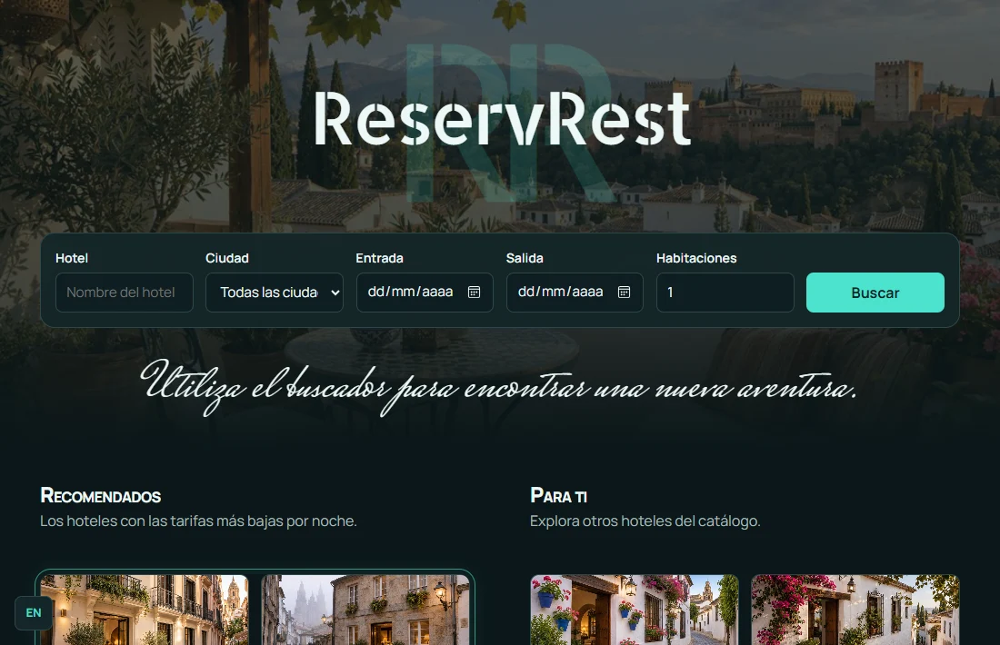

Redes
- IPv4 / IPv6
- VLAN
- OSPF
- DHCP
- DNS
- Diagnóstico de conectividad
- ACL
- SSH
- CCNA
- NAT
- VLSM
- Routers
- Switches
- VoIP
Sistemas y redes
Administrador de sistemas informáticos en red orientado a IA y ciberseguridad.
Estudio Administración de Sistemas Informáticos en Red en DIGITECHFP y me interesan especialmente la inteligencia artificial, la seguridad de sistemas y la seguridad en la nube. Cuando algo falla, me gusta entender qué ha pasado y probar distintas formas de arreglarlo.
Me gusta trabajar en equipo. Se me da bien organizar tareas, coordinar al grupo y explicar las cosas con claridad. Quiero aprovechar los proyectos que se me planteen para ampliar mi formación y aprender a resolver problemas nuevos.
Proyecto de bases de datos

Aplicación web de reservas hoteleras. Permite buscar por hotel o ciudad, consultar habitaciones disponibles para unas fechas y confirmar una reserva.
La búsqueda calcula las habitaciones libres descontando las reservas que se solapan con las fechas solicitadas. Al confirmar, un procedimiento almacenado vuelve a comprobar la capacidad antes de guardar la reserva, y un trigger registra el alta en una tabla de auditoría. La interfaz en HTML, CSS y JavaScript consulta una API en Python y Flask. Nginx sirve la web y dirige las peticiones a la API, y Docker Compose conecta los servicios.
DIGITECHFP
Universidad Complutense de Madrid
Sin finalizar
Colegio San Agustín de Madrid
Inglés B2/C1 · Francés A1
CEIPSO Los Ángeles · Gader Formación y Eventos
Supervisé operaciones diarias y coordiné reuniones y eventos.
Xian Street Food · Dublín, Irlanda
Atendí a clientes, supervisé existencias y preparé alimentos.
Tetuán, Madrid, España
carlosmbuesa231@gmail.com